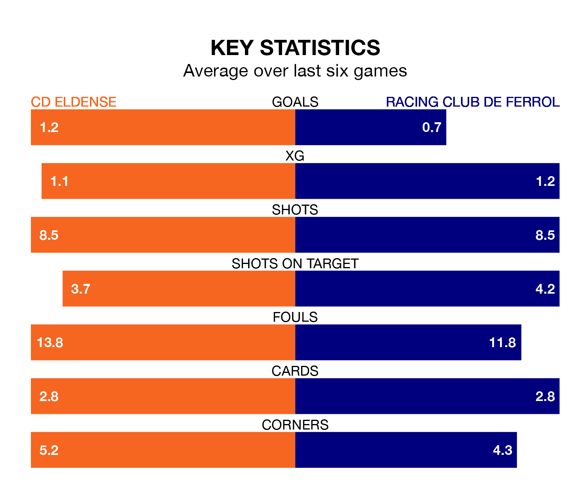

Racing Club de Ferrol travel to CD Eldense on Sunday lunchtime in the Segunda División.
The visitors come into the game on the back of a draw in their last match, having tied with Levante UD 0-0 at home.
Eldense, meanwhile, lost their last match, 1-0 against CD Tenerife.
With 34 goals in 27 games so far this season, Eldense are scoring more than average in the league with 1.3 goals per game. But they are conceding more than average too, letting in 37 goals at a rate of 1.4 per game.
Racing are also above average scorers, with 1.2 goals per game, compared to a league average of 1.1. They have conceded 1.1 goals per game.
Ferrol are fifth in the table after 27 games, of which they have won 11 and drawn 10, earning 43 points.
The home side are nine places behind the visitors in 14th, with eight wins and 11 draws putting them on 35 points.
Eldense are in mixed form in the Segunda División, with two wins and three draws from their last six games.
With a win and three draws over that period, Racing's form is worse – they have taken six points from 18, compared to Eldense's nine.
Sunday's match will be refereed by Salvador Lax Franco, who has taken charge of 14 Segunda División games so far this season, issuing two red cards and booking 55 players. He has awarded one penalty.
The last Eldense game Lax Franco refereed was a 3-1 home loss to Real Oviedo on October 1. He is yet to oversee a match featuring Racing this season.
Updated: 10:08 (UTC), 23/02/24